Przydatne linki
Układ okresowy pierwiastkówFizyka
- Ruch i siły
- Energia
- Zjawiska cieplne
- Właściwości materii
- Elektryczność
- Magnetyzm
- Ruch drgajcy i fale
- Optyka
Matematyka
- Liczby naturalne
- Liczby całkowite
- Ułamki zwykłe i dziesiętne
- Liczby niewymiere
- Liczby rzeczywiste
- Procenty
- Potęgi
- Wyrażenia algebraiczne
- Równania nierówności
- Ukady równań
- Proste i odcinki
- Kąty
- Wielokąty, koła i okręgi
- Układ współrzędnych
- Bryły
- Kombinatoryka i rachunek prawdopodobieństwa
- Statystyka opisowa
Chemia
- Substancje i ich właściwśoci
- Wewnętrzna budowa materii
- Reakcje chemiczne
- Tlen, wodór i ich związki chemiczne
- Woda i roztwory wodne
- Wodorotlenki
- Kwasy
- Sole
- Węglowodory
- Pochodne węglowodorów
- Substancje chemiczne o znaczeniu biologicznym
Szkoła podstawowa
Fizyka
- Mechanika
- Mechanika bryły sztywnej R
- Grawitacja i elementy astronomii
- Drgania
- Termodynamika
- Elektrostatyka
- Prąd elektryczny
- Magnetyzm
- Fale i optyka
- Fizyka atomowa
- Elementy fizyki relatywistycznejR
- Fizyka jądrowa
Matematyka
- Liczby rzeczywiste
- Wyrażenia algebraiczne
- Rwnania i nierwnoci
- Układy równań
- Funkcje
- Ciągi
- Trygonometria
- Planimetria
- Geometria analityczna
- Stereometria
- Kombinatoryka
- Rachunek prawdopodobieństwa i ststystyka
- Optymalizacja i rachunek różniczkowy
Chemia
- Atomy, cząsteczki i stechiometria chemiczna
- Budowa atomu
- Wiązania chemiczne
- Oddziaływania międzycząteczkowe
- Kinetyka i statyka chemiczna
- Energetyka reakcji chemicznychR
- Roztwory
- Reakcje w roztworach wodnych
- Systematyka związków nieorganichnych
- Reakcje utleniania i redukcji
- Elektrochemia. Ogniwa i elektroliza
- Metale, niemetale i ich związki
- Zastosowanie niektórych związków nieorganicznych
- Wstęp do chemii organicznej
- Węglowodory
- Hydroksylowe pochodne węglowodorów
- Związki karbonylowe
- Kwasy karboksylowe
- Estry i tłuszcze
- Związki organiczne zawierające azot
- Białka
- Cukry
Szkoła średnia
Powtórki
- Liczby rzeczywiste
- Zbiory, przedziały i nierówności
- Wyrażenia algebraiczne
- Równania i nierównoci
- Funkcje
- Ciągi
- Trygonometria
- Planimetria
- Geometria analityczna
- Stereometria
- Kombinatoryka
- Rachunek prawdopodobieństwa i statystyka
- Optymalizacja i rachunek różniczkowy
- Wykaż, że
Zestawy
Fizyka
- Poziom podstawowy
- Poziom rozszerzony
Matematyka
Chemia
Studia
Matura
Fizyka
Matematyka
Chemia
Liczby rzeczywiste
Wyrażenia algebraiczne
Równania i nierówności
Funkcje
Ciągi
Trygonometria
Planimetria
Geometria analityczna
Stereometria
Kombinatoryka
Rachunek prawdopodobieństwa i statystyka
Optymalizacja i rachunek różniczkowy
 Wykaż, że suma trzech kolejnych liczb całkowitych jest podzielna przez 3.
Wykaż, że suma trzech kolejnych liczb całkowitych jest podzielna przez 3.
- Wykaż, że suma kwadratów pięciu kolejnych liczb całkowitych jest podzielna przez 5.

- Udowodnij, że suma kwadratów czterech kolejnych liczb parzystych jest podzielna przez 8.

-
 Uzasadnij, że różnica sześcianów dwóch liczb całkowitych różniących się o trzy jest podzielna przez 9.
Uzasadnij, że różnica sześcianów dwóch liczb całkowitych różniących się o trzy jest podzielna przez 9.
- Udowodnij, że wyrażenie 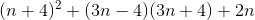dla
 jest podzielne przez 10.
jest podzielne przez 10.
- Wykaż, że liczba 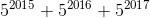 jest podzielna przez 31.

- Wykaż, że suma
 jest podzielna przez 2016.
jest podzielna przez 2016.
- Udowodnij, że liczba 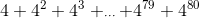 jest podzielna przez 20.

- Udowodnij, że liczba
 jest podzielna przez 57.
jest podzielna przez 57.
- Wykaż, że liczba
 jest podzielna przez 17.
jest podzielna przez 17.
- Wykaż, że wyrażenie 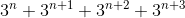 ,gdzie ,jest podzielne przez 120.

- Uzasadnij, że dla każdej dodatniej liczby całkowitej 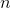 liczba
 jest wielokrotnością liczby 8.
jest wielokrotnością liczby 8.
- Wykaż, że wyrażenie
 jest podzielne przez 80.
jest podzielne przez 80.
- Wykaż, że wyrażenie 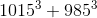 jest podzielne przez 1000.

- Wykaż, że suma 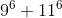 jest podzielna przez 202.

- Wykaż, że dla
 wyrażenie
wyrażenie  jest podzielne przez 6.
jest podzielne przez 6.
- Uzasadnij, że dla każdej liczby całkowitej liczba 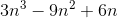 jest podzielna przez 18.

- Uzasadnij, że dla każdej liczby całkowitej
 liczba 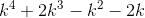 jest podzielna przez 24.
liczba 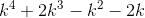 jest podzielna przez 24.
- Wykaż, że dla każdej liczby całkowitej liczba 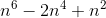 jest podzielna przez 36.

- Uzasadnij, że dla liczba
 jest podzielna przez 120.
jest podzielna przez 120.
- Pierwiastkami wielomianu stopnia trzeciego są liczby 1, 3, 5. Współczynnik przy najwyższej potędze zmiennej tego wielomianu jest równy 5. Uzasadnij, że dla każdej liczby całkowitej nieparzystej wartość tego wielomianu jest liczbą podzielną przez 240.

- Wykaż, że liczba 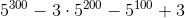 jest podzielna przez 48.

- Wykaż, że dla liczba
 jest wielokrotnością liczby 8.
jest wielokrotnością liczby 8.
- Wykaż, że liczba 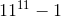 jest podzielna przez 10.

- Wykaż, że wyrażenie 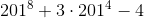 jest podzielne przez 4000.

- Wykaż, że liczba 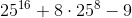 jest podzielna przez 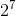.

- Uzasadnij, że liczba 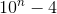 jest podzielna przez 6 , dla .

- Wykaż, że liczba
 , gdzie , jest podzielna przez 81.
, gdzie , jest podzielna przez 81.
- Wykaż, że suma liczb: czterocyfrowej, trzycyfrowej i dwucyfrowej postaci
 jest podzielna przez 137, wiedząc, że 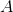 oznacza dowolną cyfrę i
jest podzielna przez 137, wiedząc, że 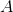 oznacza dowolną cyfrę i  .
.
- Dane są cyfry 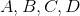 różne od zera oraz suma liczb czterocyfrowych postaci 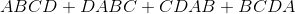. Wykaż, że suma ta jest podzielna przez 101.

- Wykaż, że iloczyn 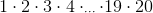 jest podzielny przez 10000.

- Dana jest liczba całkowita
 taka, że liczba
taka, że liczba  jest podzielna przez 5. Udowodnij, że liczba
jest podzielna przez 5. Udowodnij, że liczba  też jest podzielna przez 5.
też jest podzielna przez 5.
- Wykaż, że liczba 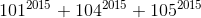 jest podzielna przez 10.

- Wykaż, że nie istnieje wielomian
 czwartego stopnia o współczynnikach całkowitych spełniający warunki 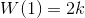 oraz 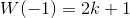, gdzie
czwartego stopnia o współczynnikach całkowitych spełniający warunki 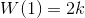 oraz 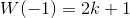, gdzie  .
.
- Wykaż, że suma pięciu kolejnych liczb nieparzystych jest podzielna przez 5.

- Wykaż, że suma czterech kolejnych liczb podzielnych przez 3 jest podzielna przez 6.

- Wykaż, że suma kwadratów trzech kolejnych liczb nieparzystych powiększona o 1 jest podzielna przez 12.

- Wykaż, że suma kwadratów dwóch liczb całkowitych różniących się o siedem powiększona o 1 jest liczbą parzystą.

- Udowodnij, że wyrażenie 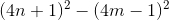 jest podzielne przez 8, jeżeli ,
 należą do liczb naturalnych.
należą do liczb naturalnych.
- Wykaż, że liczba
 jest podzielna przez 27.
jest podzielna przez 27.
- Wykaż, że suma
 jest podzielna przez 1000.
jest podzielna przez 1000.
- Wykaż, że wyrażenie 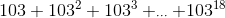 jest podzielne przez 10712.

- Wykaż, że wyrażenie
 jest podzielne przez 13.
jest podzielne przez 13.
- Wykaż, że liczba
 jest podzielna przez 36.
jest podzielna przez 36.
- Wykaż, że wyrażenie 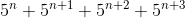 jest podzielne przez 195, jeśli .

- Uzasadnij, że dla każdej liczby dodatniej całkowitej liczba 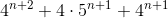 jest wielokrotnością liczby 20.

- Wykaż, że liczba jest 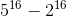 podzielna przez 29.

- Wykaż, że liczba 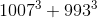 jest podzielna przez 1000.

- Wykaż, że wyrażenie
 jest podzielne przez 91.
jest podzielne przez 91.
- Wykaż, że wyrażenie 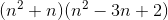 jest podzielne przez 24 dla każdej liczby całkowitej .

- Wykaż, że iloczyn trzech kolejnych liczb parzystych jest podzielny przez 48.

- Wykaż, że wyrażenie
 jest podzielne przez 4, jeśli i
jest podzielne przez 4, jeśli i .
.
- Wykaż, że kwadrat iloczynu dwóch kolejnych liczb całkowitych podzielnych przez 5 jest podzielny przez 2500.

- Wykaż, że dla wyrażenie
 jest wielokrotnościa 5!
jest wielokrotnościa 5!
- Liczby 2, 4, 6 są pierwiastkami wielomianu stopnia trzeciego, w którym współczynnik przy najwyższej potędze zmiennej jest równy 2.Uzasadnij, że dla każdej liczby całkowitej parzystej wartość tego wielomianu jest liczbą podzielną przez 96.

- Wykaż, że liczba
 jest podzielna przez 56.
jest podzielna przez 56.
- Wykaż, że dla liczba 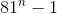 jest wielokrotnością liczby 16.

- Wykaż, że dla liczba
 jest wielokrotnością liczby 15.
jest wielokrotnością liczby 15.
- Wykaż, że wyrażenie
 jest podzielne przez 25.
jest podzielne przez 25.
- Wykaż, że liczba
 jest podzielna przez 100.
jest podzielna przez 100.
- Uzasadnij, że liczba
 jest podzielna przez 9 dla .
jest podzielna przez 9 dla .
- Wykaż, że liczba 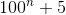 jest podzielna przez 15 dla .

- Udowodnij, że suma liczb: trzycyfrowej, dwucyfrowej i jednocyfrowej postaci 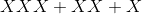 jest podzielna przez 41, jeżeli
 oznacza dowolną cyfrę różną od zera.
oznacza dowolną cyfrę różną od zera.
- Wykaż, że suma liczb trzycyfrowych postaci
 jest podzielna przez 111, wiedząc, że 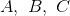 oznaczają dowolne cyfry i 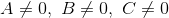.
jest podzielna przez 111, wiedząc, że 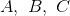 oznaczają dowolne cyfry i 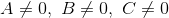.
- Wykaż, że iloczyn 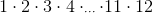 jest podzielny przez 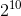.

- Dana jest liczba
 taka, że
taka, że  jest podzielna przez 7. Wykaż, że liczba
jest podzielna przez 7. Wykaż, że liczba  też jest podzielna przez 7.
też jest podzielna przez 7.
- Wykaż, że liczba
 jest podzielna przez 100.
jest podzielna przez 100.
- Wykaż, że nie istnieje wielomian 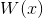 stopnia trzeciego o współczynnikach całkowitych, który spełnia warunki:
 i 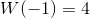.
i 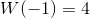.
- Wykaż, że suma trzech kolejnych liczb nieparzystych przy dzieleniu przez 6 daje resztę 3.

- Uzasadnij, że suma kwadratów trzech kolejnych liczb parzystych przy dzieleniu przez 12 daje resztę 8.

- Udowodnij, że sześcian sumy czterech kolejnych liczb całkowitych przy dzieleniu przez 16 daje resztę 8.

- Wykaż, że jeśli każda liczba całkowita 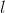, przy dzieleniu przez 5 daje resztę 3, to
 przy dzieleniu przez 5 również daje resztę 3.
przy dzieleniu przez 5 również daje resztę 3.
- Wykaż, że jeżeli liczba całkowita nie dzieli się przez 3, to kwadrat tej liczby przy dzieleniu przez 3 daje resztę 1.

- Liczba przy dzieleniu przez 5 daje resztę 1, a liczba
 przy dzieleniu przez 5 daje resztę 4. Wykaż, że różnica kwadratów liczb i jest podzielna przez 5.
przy dzieleniu przez 5 daje resztę 4. Wykaż, że różnica kwadratów liczb i jest podzielna przez 5.
- Wykaż, że suam kolejnych czterech liczb parzystych przy dzieleniu przez 8 daje resztę 4.

- Wykaż, że suma kwadratów trzech kolejnych liczb nieparzystych przy dzieleniu przez 12 daje resztę 11.

- Wykaż, że kwadrat sumy dwóch liczb całkowitych różniących się o 11 przy dzieleniu przez 4 daje resztę 1.

- Wykaż, że liczba całkowita , która przy dzieleniu przez 7 daje resztę 1, ma tę własność, że reszta z dzielenia liczby 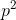 przez 7 również jest równa 1.

- Wykaż, że jeżeli liczba całkowita nie dzieli się przez 4, to kwadrat tej liczby przy dzieleniu przez 4 daje resztę 0 lub 1.

- Dana jest liczba , która przy dzieleniu prze 10 daje resztę 1, i liczba
 , która przy dzieleniu przez 5 daje resztę 2. Wykaż, że suma kwadratów tych liczb jest wielokrotnością 5.
, która przy dzieleniu przez 5 daje resztę 2. Wykaż, że suma kwadratów tych liczb jest wielokrotnością 5.
- Wykaż, że liczba 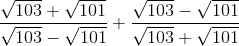 jest liczbą naturalną.

- Wykaż, że liczba
 jest liczbą całkowitą.
jest liczbą całkowitą.
- Wykaż, że liczba 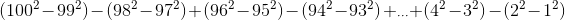 jest kwadratem liczby naturalnej.

- Wykaż, że wyrażenie
 jest liczbą całkowitą.
jest liczbą całkowitą.
- Wykaż, że liczba 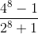 jest liczbą całkowitą.

- Wykaż, że liczba 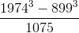 jest liczbą całkowitą.

- Wykaż, że liczba
 jest liczbą całkowitą.
jest liczbą całkowitą.
- Wykaż, że
 .
.
- Wykaż, że liczba
 .
.
- Wykaż, że liczba
 jest naturalną.
jest naturalną.
- Wykaż, że jeżeli liczba
 ,to
,to .
.
- Uzasadnij, że liczba
 jest liczbą całkowitą, jeśli .
jest liczbą całkowitą, jeśli .
- Wykaż, że liczba 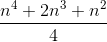 jest kwadratem liczby całkowitej, gdy .

- Wykaż, że
 .
.
- Wykaż, że 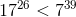.

- Wykaż, że 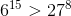.

- Wykaż, że jeżeli 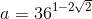 i
 , to 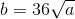.
, to 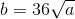.
- Wykaż, że
 jest liczbą pierwszą.
jest liczbą pierwszą.
- Wykaż, że
 .
.
- Wykaż, że
 .
.
- Wykaż, że jeżeli , to .

- Wykaż, że
 .
.
- Wykaż, że .

- Wykaż, że jeśli , to liczba jest sześcianem liczby parzystej.

- Wykaż, że liczba
 jest liczbą naturalną parzystą.
jest liczbą naturalną parzystą.
- Wykaż, że liczba jest kwadratem liczby naturalnej.

- Wykaż, że liczba jest kwadratem liczby naturalnej.

- Wykaż, że liczba jest wielokrotnością liczby 9.

- Wykaż, że jest liczbą całkowitą.

- Wykaż, że jest
 liczbą całkowitą.
liczbą całkowitą.
- Wykaż, że liczba
 jest sześcianem liczby pierwszej.
jest sześcianem liczby pierwszej.
- Wykaż, że
 .
.
- Wykaż, że .

- Wykaż, że liczba
 jest liczbą pierwszą.
jest liczbą pierwszą.
- Wykaż, że liczba
 .
.
- Uzasadnij, że liczba
 dla , jest liczbą całkowitą.
dla , jest liczbą całkowitą.
- Wykaż, że liczba
 jest kwadratem liczby całkowitej, gdy .
jest kwadratem liczby całkowitej, gdy .
- Wykaż, że
 .
.
- Wykaż, że
 .
.
- Wykaż, że .

- Wykaż, że jeżeli
 i
i  , to
, to  .
.
- Wykaż, że .

- Wykaż, że .

- Wykaż, że .

- Wiedząc, że jeśli
 , to
, to  .
.
- Wykaż, że liczba
 jest liczbą pierwszą.
jest liczbą pierwszą.
- Wykaż, że jest czwartą potegą liczby naturalnej.

- Wykaż, że jeśli
 , to jest liczbą naturalną.
, to jest liczbą naturalną.
- Uzadasnij, że jeżeli ,to .

- Wykaż, że .

- Wykaż, że dla dodatnich liczb
 oraz dla i
oraz dla i  prawdziwe jest równanie .
prawdziwe jest równanie .
- Uzasadnij, że jeżeli
 i , to .
i , to .
- Uzasadnij, że jeżeli , to
 .
.
- Uzasadnij, że jeżeli i
 , to
, to  .
.
- Wykaż, że jeżeli
 ,
,  i , to równanie jest prawdziwe.
i , to równanie jest prawdziwe.
- Wykaż, że jeżeli , to lub .

- Równanie
 , gdzie , ma trzy pierwiastki .Wykaż, że:
, gdzie , ma trzy pierwiastki .Wykaż, że:
- Wykaż, że jeżeli
 , to .
, to .
- Wykaż, że
 dla .
dla .
- Wykaż, że dla i
 oraz dla
oraz dla  i
i  prawdziwe jest równanie .
prawdziwe jest równanie .
- Uzasadnij, że jeżeli jest liczbą rzeczywistą różną od zera i , to
 .
.
- Udowodnij, że jeżeli , to .

- Uzasadnij, że jeżeli i
 , to .
, to .
- Wykaż, że jeśli oraz , to równanie jest prawdziwe.

- Wykaż, że jeśli
 dla
dla  , to .
, to .
- Równanie
 , gdzie
, gdzie  , ma dwa różne pierwiastki
, ma dwa różne pierwiastki  . Wykaż, że:
. Wykaż, że:
- Wykaż, że liczba
 jest liczbą naturalną.
jest liczbą naturalną.
- Wykaż, że dla każdego oraz równanie
 jest prawdziwe.
jest prawdziwe.
- Wykaż, że dla każdego ciąg
 jest ciągiem artymetycznym.
jest ciągiem artymetycznym.
- Wykaż, że istnieje parametr
 , dla którego ciąg o wyrazach
, dla którego ciąg o wyrazach  jest ciągiem geometrycznym o niezerowych wyrazach.
jest ciągiem geometrycznym o niezerowych wyrazach.
- Ciąg jest jednocześnie ciągiem artymetycznym i geometrycznym. Wykaż, że wszystkie wyrazy tego ciągu są równe.

- Dany jest ciąg geometryczny , którego wszystkie wyrazy są dodatnie. Wykaż, że prawdziwe jest równanie
 .
.
- Dany jest ciąg arytmetyczny o wzorze ogólnym
 określonym dla . Wykaż, że suma
określonym dla . Wykaż, że suma  początkowych wyrazów tego ciągu wynosi .
początkowych wyrazów tego ciągu wynosi .
- Wiedząc, że jest ciągiem geometrycznym, wykaż, że prawdziwa jest zależność
 , gdzie jest sumą początkowych wyrazów ciągu .
, gdzie jest sumą początkowych wyrazów ciągu .
- Dana jest suma początkowych wyrazów ciągu określona wzorem
 . Wykaż, że ciąg jest ciągiem arytmetycznym.
. Wykaż, że ciąg jest ciągiem arytmetycznym.
- Dana jest suma początkowych wyrazów ciągu określona wzorem
 . Wykaż, że ciąg ten jest geometryczny.
. Wykaż, że ciąg ten jest geometryczny.
- Wykaż, że jeżeli ciąg jest ciągiem arytmetycznym, to ciąg określonej wzorem
 jest ciągiem geometrycznym.
jest ciągiem geometrycznym.
- Dany jest ciąg arytmetyczny . Wiedząc, że , wykaż, że .

- Dany jest wielomian
 , gdzie współczynniki
, gdzie współczynniki  są kolejnymi wyrazami ciągu geometrycznego o ilorazie różnym od zera. Wykaż, że równanie ma dokładnie jedno rozwiązanie.
są kolejnymi wyrazami ciągu geometrycznego o ilorazie różnym od zera. Wykaż, że równanie ma dokładnie jedno rozwiązanie.
- Kolejne kąty czworokąta wpisanego w okrąg są kolejnymi wyrazami ciągu artymetycznego. Wykaż, że czworokąt jest trapezem.

- Wykaż, że liczba jest kwadratem liczby naturalnej.

- Wykaż, że dla każdego
 .
.
- Wykaż, że dla każdego ciąg
 jest arytmetyczny.
jest arytmetyczny.
- Wykaż, że istnieje liczba taka, że ciąg o wyrazach jest ciągiem geometrycznym.

- Wiedząc, że liczby
 są kolejnymi wyrazami ciągu arytmetycznego, a liczby
są kolejnymi wyrazami ciągu arytmetycznego, a liczby  kolejnymi wyrazami ciągu geometrycznego, wykaż, że
kolejnymi wyrazami ciągu geometrycznego, wykaż, że  .
.
- Wiedząc, że liczby
 są kolejnymi niezerowymi wyrazami ciągu geometrycznego, uzasadnij, że .
są kolejnymi niezerowymi wyrazami ciągu geometrycznego, uzasadnij, że .
- Dany jest ciąg arytmetyczny o wzorze . Wykaż, że suma początkowych wyrazów tego ciągu wynosi
 dla .
dla .
- Wiedząc, że jest ciągiem arytmetycznym, wykaż, że , gdzie jest sumą początkowych wyrazów tego ciągu.

- Dana jest suma początkowych wyrazów ciągu określona wzorem . Wykaż, że ciąg jest arytmetyczny.

- Dana jest suma początkowych wyrazów ciągu określona wzorem . Wykaż, że ciąg jest geometryczny.

- Wykaż, że jeżeli ciąg jest geomertyczny, to ciąg określony wzorem jest ciągiem arytmetycznym.

- Dany jest ciąg określony wzorem
 . Wykaż, że
. Wykaż, że  .
.
- Dany jest wielomian
 , gdzie współczynniki
, gdzie współczynniki  są kolejnymi wyrazami ciągu geometrycznego o ilorazie różnym od zera. Wykaż, że wielomian
są kolejnymi wyrazami ciągu geometrycznego o ilorazie różnym od zera. Wykaż, że wielomian  ma dokładnie jedno rozwiązanie.
ma dokładnie jedno rozwiązanie.
- Kolejne długości boków czworokąta opisanego na okręgu są kolejnymi wyrazami ciągu geometrycznego. Wykaż, że ten czworokąt jest rombem.

- Wykaż, że dla każdego należącego do liczb rzeczywistych prawdziwa jest nierówność .

- Wykaż, że jeśli
 , to
, to  .
.
- Udowodnij, że dla każdego i wyrażenie jest prawdziew.

- Udowodnij, że jeśłi , to .

- Wykaż, że dla dowolnych dodatnich liczb
 prawdziwa jest nierówność
prawdziwa jest nierówność  .
.
- Udowodnij, że dla dowolnych liczb i nierówność jest prawdziwa.

- Wykaż, że nierówność
 jest prawdziwa dla każdego .
jest prawdziwa dla każdego .
- Wykaż, że dla dowolnych liczb i prawdziwa jest nierówność
 .
.
- Wykaż, że dla dowolnych liczb rzeczywistych
 i
i  prawdziwa jest nierówność .
prawdziwa jest nierówność .
- Wykaż, że dla każdej liczby rzeczywistej nierówność jest prawdziwa.

- Wiedząc, że , wykaż, że nierówność jest prawdziwa.

- Wykaż, że nierówność
 jest prawdziwa dla każdego
jest prawdziwa dla każdego  i
i  .
.
- Wykaż, że jeżeli i są liczbami dodatnimi oraz , to .

- Wykaż, że jeśli
 i
i  i
i  , to .
, to .
- Wykaż, że dla dowolnych wyrażenie
 .
.
- Uzasadnij, że jeżeli liczby są dodatnie i
 , to
, to  .
.
- Wykaż, że jeśli
 są liczbami dodatnimi, to
są liczbami dodatnimi, to  .
.
- Udowodnij, że dla każdego
 prawdziwa jest nierówność .
prawdziwa jest nierówność .
- Wykaż, że dla dowolnych liczb i , gdzie
 , nierówność jest prawdziwa.
, nierówność jest prawdziwa.
- Wykaż, że dla każdego należącego do liczb rzeczywistych
 .
.
- Wykaż, że dla każdego
 prawdziwa jest nierówność
prawdziwa jest nierówność  .
.
- Wykaż, że wyrażenie
 jest prawdziwe dla każdej liczby rzeczywistej .
jest prawdziwe dla każdej liczby rzeczywistej .
- Wykaż, że wyrażenie
 jest prawdziwe dla
jest prawdziwe dla  i
i  .
.
- Udowodnij, że dla dowolnych liczb dodatnich
 prawdziwa jest nierówność
prawdziwa jest nierówność  .
.
- Wykaż, że nierówność jest spełniona przez wszystkie liczby rzeczywiste i .

- Udowodnij, że dla dowolnych liczb i prawdziwa jest nierówność
 .
.
- Wykaż, że dla dowolnych liczb i prawdziwa jest nierówność
 .
.
- Wykaż, że dla dowolnych i wyrażenie
 jest prawdziwe.
jest prawdziwe.
- Wykaż, że dla każdej liczby rzeczywistej nierówność jest prawdziwa.

- Udowodnij, że jeżeli
 , to prawdziwa jest nierówność
, to prawdziwa jest nierówność  .
.
- Wykaż, że dla prawdziwa jest nierówność
 .
.
- Udowodnij, że jeśli
 oraz jeśli , to .
oraz jeśli , to .
- Wykaż, że nierówność
 jest spełniona dla wszystkich dodatnich liczb rzeczywistych i .
jest spełniona dla wszystkich dodatnich liczb rzeczywistych i .
- Uzasadnij, że jeżeli są liczbami dodatnimi, to
 .
.
- Uzasadnij, że jeśli , gdzie liczby są dodatnie, to
 .
.
- Wykaż, że dla każdego
 nierówność .
nierówność .
- Wykaż, że dla każdego
 nierówność
nierówność  jest prawdziwa.
jest prawdziwa.
- Wykaż, że dla dowolnych liczb i , gdzie
 , nierówność jest prawdziwa.
, nierówność jest prawdziwa.
- Wykaż, że
 .
.
- Kąt
 jest kątem ostrym i . Wykaż, że .
jest kątem ostrym i . Wykaż, że .
- Kąt jest kątem ostrym i . Wykaż, że .

- Wykaż, że
 .
.
- Wykaż, że
 .
.
- Wykaż, że
 .
.
- Podaj odpowiednie założenia i sprawdź, czy tożsamością jest równość .

- Wykaż, że dla każdego , takiego, że
 , gdzie , równanie
, gdzie , równanie  jest prawdziwe.
jest prawdziwe.
- Wykaż, że dla dowolnego kąta prawdziwa jest tożsamość
 .
.
- Udowodnij, że dla kąta
 , gdzie , prawdziwa jest tożsamość
, gdzie , prawdziwa jest tożsamość  .
.
- Wykaż, że
 .
.
- Wiedząc, że , wykaż, że .

- Wykaż, że .

- Kąt jest kątem ostrym i
 . Wykaż, że .
. Wykaż, że .
- Kąt jest kątem ostrym i . Wykaż, że .

- Wiedząc, że
 , wykaż, że
, wykaż, że  .
.
- Wykaż, że
 .
.
- Wykaż, że .

- Podaj odpowiednie założenia i sprawdź, czy tożsamością jest równość
 .
.
- Wykaż, że dla każdego kąta , takiego, że , gdzie , równanie
 jest prawdziwe.
jest prawdziwe.
- Wykaż, że dla dowolnego kąta prawdziwa jest tożsamość .

- Wykaż, że
 dla , gdzie .
dla , gdzie .
- Wykaż, że
 .
.
- Wiedząc, że
 , wykaż, że
, wykaż, że  .
.
- Dany jest prostokąt . Okręgi o średnicach
 i przecinają się w punktacg i
i przecinają się w punktacg i  (zobacz rysunek). Wykaż, że punkty
(zobacz rysunek). Wykaż, że punkty  , i
, i  są współliniowe.
są współliniowe.


- W okrąg o środku
 wpisano trójkąt równoramienny
wpisano trójkąt równoramienny  , gdzie
, gdzie  (zobacz rysunek). Udowodnij, że
(zobacz rysunek). Udowodnij, że  .
.

- Dany jest ośmiokąt foremny wpisany w okrąg o środku . W ośmiokącie poprowadzono przekątne
 i , które przecięły się w punkcie (patrz rysunek). Wykaż, że
i , które przecięły się w punkcie (patrz rysunek). Wykaż, że  .
.

- Czworokąt wpisano w okrąg. Bok jest średnicą tego okręgu. Udowodnij, że .


- Dany jest czworokąt wypukły o różnych długościach boków. Wiedząc, że przekątne tego czworokąta są prostopadłe, udowodnij, że
 .
.
- Dany jest prostokąt i dowolny punkt
 położony we wnętrzu prostokąta. Wykaż, że
położony we wnętrzu prostokąta. Wykaż, że  .
.
- Trapez równoramienny o podstawach i
 jest opisany na okręgu o promieniu
jest opisany na okręgu o promieniu  . Wiedząc, że
. Wiedząc, że  i , wykaż, że .
i , wykaż, że .
- Dane są dwa styczne zewnętrznie okręgi o promieniach
 i , które jednocześnie są styczne do prostej w punktach i (zobacz rysunek). Wykaż, że .
i , które jednocześnie są styczne do prostej w punktach i (zobacz rysunek). Wykaż, że .

- Dane są dwa współśrodkowe okręgi o promieniach różnej długości. W większym okręgu poprowadzono tak cięciwę, że jest ona stycznia zewnętrznie do mniejszego okręgu. Wykaż, że jeśli długość cięciwy wynosi , to pole powierzchni pierścienie zawartego między tymi okręgami wynosi .

- Dany jest trójkąt prostokątny. Na każdym z boków narysowano półokręgi (zobacz rysunek). Wykaż, że pole zakreskowanych obszarów, zwanych księżycami Hipokratesa, równe jest polu trójkąta.


- W prostokąt wpisano trzy okręgi o promieniu wzajemnie styczne. Każdy z okręgów jest styczny do jednego lub dwóch boków prostokąta (zobacz rysunek). Wykaż, że pole prostokąta wynosi .


- W trójkąt prostokątny wpisano okręg o promieniu . Na tym samym trójkącie opisano okręg o promieniu
 . Wykaż, że pole trójkąta wynosi
. Wykaż, że pole trójkąta wynosi  .
.
- W trójkąt prostokątny wpisano okręg o promieniu . Na tym samym trójkącie opisano okręg o promieniu . Udowodnij, że pole trójkąta wynosi
 .
.
- W prostokącie punkt leży na boku w taki sposób, że , a punkt
 jest środkiem boku
jest środkiem boku  (zobacz rysunek). Wiedząc, że i
(zobacz rysunek). Wiedząc, że i  , wykaż, że .
, wykaż, że .

- W trójkącie poprowadzono środkową , na której zaznaczono punkt (zobacz rysunek). Wykaż, że
 .
.

- Dany jest równoległobok , w którym bok jest dwa razy dłuższy od boku . W połowie odcinka zaznaczono punkt . Wykaż, że kąt jest kątem prostym.

- Dany jest trapez , w którym . Na boku wybrano taki punkt
 , że
, że  i
i  . Wykaż, że kąt jest prosty.
. Wykaż, że kąt jest prosty.
- W trójkącie poprowadzono dwusieczne kątów przy wierzchołkach i , które przecinają się w punkcie . Uzasadnij, że kąt jest rozwarty.

- Dany jest trójkąt ostrokątny o bokach długości , ,
 i kątach ,
i kątach ,  ,
,  (zobacz rysunek). Wykaż, że
(zobacz rysunek). Wykaż, że  .
.

- Dany jest trójkąt prostokątny , gdzie wysokośc
 .Wysokość podzieliła przeciwprostokątną na odcinki o długościach i . Wykaż, że .
.Wysokość podzieliła przeciwprostokątną na odcinki o długościach i . Wykaż, że .
- Dany jest trójkąt prostokątny . Na bokach i dorysowano kwadraty odpowiednio oraz . Poprowadzono odcinki
 oraz , które przecięly boki trójkąta w punktach i
oraz , które przecięly boki trójkąta w punktach i  (zobacz rysunek). Wykaż, że .
(zobacz rysunek). Wykaż, że .

- Dane są trójkąty prostokątne równoramienne i
 (zobacz rysunek). Wykaż, że
(zobacz rysunek). Wykaż, że  , jeżeli wiadomo, że .
, jeżeli wiadomo, że .

- Na bokach trójkąta równobocznego zbudowano kwadraty
 , i (zobacz rysunek). Wykaż, że trójkąt
, i (zobacz rysunek). Wykaż, że trójkąt  jest równoboczny.
jest równoboczny.

- Na boku trójkąta równobocznego zbudowano kwadrat, a na boku kwadratu zbudowano kolejny trójkąt równoboczny (zobacz rysunek). Wykaż, że trójkąt
 jest równoboczny.
jest równoboczny.

- Dany jest równoległobok . Na bokach i zbudowano kwadraty
 i
i  . Wykaż, że
. Wykaż, że  .
.

- We wnętrzu trójkąta równobocznego o boku długości umieszczono punkt (zobacz rysunek). Wykaż, że suma wszystkich odległości tego punktu od poszczególnych boków wynosi .


- Dany jest trójkąt , w którym poprowadzono wysokość i odcinek
 , gdzie jest środkiem boku oraz . Wykaż, że trójkąt jest trójkątem równobocznym.
, gdzie jest środkiem boku oraz . Wykaż, że trójkąt jest trójkątem równobocznym.

- Dany jest trójkąt . na boku znajduje się punkt . Dorysowano dwa okręgi. Pierwszy przechodzi przez punkty i , a drugi przez punkty i . Okręgi przecięły się również w punkcie
 . Pierwszy okrag przeciął bok w punkcie , a drugi okrąg - bok w punkcie (zobacz rysunek). Wykaż, że na czworokącie można opisać okrąg.
. Pierwszy okrag przeciął bok w punkcie , a drugi okrąg - bok w punkcie (zobacz rysunek). Wykaż, że na czworokącie można opisać okrąg.

- Dane są dwa niewspółrodkowe okręgi , które przecinają się w punktach i . Odcinek jest średnicą pierwszego okręgu, a odcinek jest średnicą drugiego okręgu. Wykaż, że punkty , , są współliniowe.

- Okręg o środku podzielono punktami
 na sześć równych łuków. Uzasadnij, że
na sześć równych łuków. Uzasadnij, że  .
.

- Punkty dzielą okręg o środku w punkcie na 15 równych łuków (zobacz rysunek). Punkt jest punktem przecięcia odcinków oraz . Wykaż, że
 .
.

- W okrąg o promieniu wpisano kwadrat . Punkt leży na okręgu, ale nie jest wierzchołkiem kwadratu . Wykaż, że
 .
.
- W okrąg o promieniu wpisano kwadrat . Punkt leży na okręgu, ale nie jest wierzchołkiem kwadratu . Wykaż, że .

- Dany jest prostokąt , gdzie
 i . Wykaż, że odległośc punktu od przekątnej
i . Wykaż, że odległośc punktu od przekątnej  jest równa
jest równa  .
.
- W trapezie równoramiennym podstawy mają długość i . Uzasadnij, że pole koła wpisanego w ten trapez ma wartość
 .
.
- Dane są trzy okręgi o środkach
 i
i  , których stosunek długości promieni wynosi . Każdy okręg jest styczny zewnętrznie z pozostałymi dwoma okręgami. Wykaż, że trójkąt
, których stosunek długości promieni wynosi . Każdy okręg jest styczny zewnętrznie z pozostałymi dwoma okręgami. Wykaż, że trójkąt  jest prostokątny.
jest prostokątny.
- Dany jest trójkąt prostokątny. Na każdym boku trójkąt zbudowano półkole (zobacz rysunek). Wykaż, że suma powierzchni obu półkoli zbudowanych na przyprostokątnych jest równa powierzchni pólkola zbudowanego na przeciwprostokątnej.


- Wykaż, że suma pól księżyców Hipokratesa zbudowanych na bokach trójkąta równobocznego jest większa od pola tego trójkąta.

- Dwa okręgi o środkach
 i są styczne zewnętrznie i każdy z nich jest jednocześnie styczny do ramion tego samego kąta prostego. Udowodnij, że stosunek promienia mniejszego z tych okręgów do promienia większego jest równy .
i są styczne zewnętrznie i każdy z nich jest jednocześnie styczny do ramion tego samego kąta prostego. Udowodnij, że stosunek promienia mniejszego z tych okręgów do promienia większego jest równy .

- W okrąg o promieniu wpisano trójkąt prostokątny o przyprostokątnych i oraz przeciwprostokątnej . W trójkąt ten wpisano okręg o promieniu
 . Wykaż, że .
. Wykaż, że .
- Na trójkącie prostokątnym opisano okrąg o promieniu i w ten sam trójkąt wpisano okręg o promieniu . Wykaż, że wysokość trójkąta opuszczona na przeciwprostokątną jest równa
 .
.
- W prostokącie
 punkt jest środkiem boku , a punkt środkiem boku
punkt jest środkiem boku , a punkt środkiem boku  (zobacz rysunek). Wykaż, że .
(zobacz rysunek). Wykaż, że .

- Dany jest trapez , gdzie . W trapezie poprowadzono przekątne przecinające się w punkcie . Wiedząc, że ,
 oraz pole trójkąta jest równe 16, wykaż, że trójkąty i mają równe pola o wartości 24.
oraz pole trójkąta jest równe 16, wykaż, że trójkąty i mają równe pola o wartości 24.

- Z dwóch sąsiednich wierzchołków równoległoboku poprowadzono dwusieczne kątów. Wykaż, że dwusieczne te są prostopadłe.

- Dane są dwa okręgi o środkach w punkcie i styczne w punkcie oraz trapez , w którym (zobacz rysunek). Wykaż, że kąt
 jest kątem prostym.
jest kątem prostym.

- Na kolejnych bokach trójkąta równobocznego zbudowano trójkąt równoboczny
 , kwadrat oraz kwadrat . Wykaż, że kąt jest kątem prostym.
, kwadrat oraz kwadrat . Wykaż, że kąt jest kątem prostym.

- Udowodnij, że długość środkowej
 trójkąta o bokach , , opadającej na bok można wyrazić wzorem
trójkąta o bokach , , opadającej na bok można wyrazić wzorem  .
.
- Dany jest trójkąt prostokątny o przyprostokątnych długości i . W trójkąt wpisano kwadrat o boku (zobacz rysunek). Wykaż, że .


- Dany jest czworokąt , który nie ma par boków równoległych. Punkt jest środkiem boku , a punkt jest środkiem boku . Natomiast punkty
 i
i  są odpowiednio środkami przekątnych i . Wykaż, że
są odpowiednio środkami przekątnych i . Wykaż, że  .
.
- Dane są dwa różne kwadraty oraz
 o wspólnym wierzchołku (zobacz rysunek). Wykaż, że
o wspólnym wierzchołku (zobacz rysunek). Wykaż, że  .
.

- Na bokach trójkąta równobocznego leżą punkty , , w taki sposób, że punkt leży na boku , punkt leży na , a punkt leży na oraz zachodzi równość
 (zobacz rysunek). Wykaż, że trójkąt
(zobacz rysunek). Wykaż, że trójkąt  jest równoboczny.
jest równoboczny.

- Dany jest równoległobok . Na boku oraz na boku zbudowano trójkąty równoboczne
 i
i  (zobacz rysunek). Udowodnij, że trójkąt jest równoboczny.
(zobacz rysunek). Udowodnij, że trójkąt jest równoboczny.

- Dany jest trójkąt , w którym punkt jest środkiem boku oraz . Bok przedłużono w ten sposób, że (zobacz rysunek). Wykaż, że .


- We wnętrzu sześciokąt aforemnego o boku długości umieszczono punkt (zobacz rysunek). Wykaż, że suma wszystkich odległości punktu od poszczególnych boków wynosi
 .
.

- Trójkąt jest równoboczny. Na boku obrano punkt oraz przedłużono bok do punktu tak, że
 . Wykaż, że
. Wykaż, że  .
.

- Wykaż, że w trójkącie prostokątnym o długościach przyprostokątnych i oraz przeciwprostokątnej długości , promień okręgu wpisanego w ten trójkąt można wyrazić wzorem .

- Dany jest kwadrat . Przekątne kwadratu przecinają się w punkcie . Punkty i są środkami odcinków odpowiednio
 i
i  , a punkty i
, a punkty i  leżą na przekątnej i spełniają warunki
leżą na przekątnej i spełniają warunki  i
i  (zobacz rysunek). Wykaż, że .
(zobacz rysunek). Wykaż, że .

- Czworokąt wpisano w okrąg. Dwusieczne tego czworokąta przecinają się w punktach , , , (zobacz rysunek). Udowodnij, że na czworokącie
 można opisać okrąg.
można opisać okrąg.

- Dany jest prostopadłościan o długościach krawędzi ,,. Wykaż, że przekątna prostopadłościanu jest równa
 .
.
- Wykaż, że objętość czworościany foremnego o krawędzi wynosi
 .
.
- Sześcian wpisano w kulę. Wykaż, że stosunek pola powierzchni całkowitej kuli do pola powierzchni całkowitej sześcianu wynosi
 .
.
- Przekątna prostopadłościanu nachylona jest do poszczególnych ścian pod kątem , i . Wykaż, że
 .
.
- Trójkąt równoramienny o długościach ramion obrócono wokół jednego z ramion. Kąt między ramionami ma miarę
 . Wykaż, że objętość powstałej bryły wynosi .
. Wykaż, że objętość powstałej bryły wynosi .
- W ostrosłupie prawidłowym czworokątnym dana jest wysokość ostrosłupa oraz kąt , który jest kątem nachylenia krawędzi bocznej do krawędzi podstawy. Wykaż, że objętość tego ostrosłupa wynosi .

- Wykaż, że przekątna sześcianu o krawędzi ma długość .

- Wykaż, że objętość ośmiościany foremnego o krawędzi wynosi
 .
.
- W sześcian wpisano kulę. Wykaż, że stosunek objętości kuli do objętości sześcianu wynosi .

- Przekątna graniastosłupa prawidłowego czworokątnego tworzy z podstawą kąt , a ze ścianą boczną kąt . Wykaż, że
 .
.
- Trójkąt prostokątny o przyprostokątnych i oraz przeciwprostokątnej obrócono wokół przeciwprostokątnej. Wykaż, że objętośc otrzymanej w wyniku obrotu bryły wynosi
 .
.
- W graniastosłupie prawidłowym sześciokątnym najdłuższa przekątna graniastosłupa ma długość i tworzy z wysokością kąt . Wykaż, że pole powierzchni całkowitej wynosi
 .
.
- Uzasadnij, że liczbę wszystkich przekątnych kąta wypukłego można wyrazić wzorem
 .
.
- Wykaż, że dla każdego
 , gdzie , zachodzi .
, gdzie , zachodzi .
- Wykaż, że
 dla i , gdzie .
dla i , gdzie .
- Niech zdarzenia i będą zdarzeniami losowymi zawartymi w . Wiedząc, że
 i , udowodnij, że
i , udowodnij, że  .
.
- Zdarzenia losowe , są zawarte w oraz (
 oznacza zdarzenie przeciwne do ; oznacza zdarzenie przeciwne do ). Wykaż, że .
oznacza zdarzenie przeciwne do ; oznacza zdarzenie przeciwne do ). Wykaż, że .
- , są zdarzeniami losowymi zawartymi w . Wykaż, że jeżeli
 i , to
i , to  ( oznacza zdarzenie przeciwne do ).
( oznacza zdarzenie przeciwne do ).
- Wykaż, że jeśli zdarzenia
 , to .
, to .
- i są zdarzeniami losowymi zawartymi w . Wykaż, że jeżeli
 i
i  , to .
, to .
- Zdarzenia losowe , są zawarte w . Wykaż, że jeżeli
 , to dla dowolnego
, to dla dowolnego  .
.
- Wykaż, że liczba przekątnych graniastosłupa prawidłowego -kątnego wynosi .

- Wykaż, że dla
 , gdzie i , zachodzi
, gdzie i , zachodzi  .
.
- Wykaz, że dla i oraz
 zachodzi
zachodzi  .
.
- Niech zdarzenia i będą zdarzeniami losowymi zawartymi w , a zdarzenia i są zdarzeniami przeciwnymi odpowiednio do zdarzeń i . Wiedząc, że i
 , wykaż, że
, wykaż, że  .
.
- Zdarzenia losowe , są zawarte w oraz
 ( oznacza zdarzenie przeciwne do ; oznacza zdarzenie przeciwne do ). Wykaż, że
( oznacza zdarzenie przeciwne do ; oznacza zdarzenie przeciwne do ). Wykaż, że  .
.
- Zdarzenia losowe , są zawarte w . Wykaż, że jeżeli
 i , to
i , to  ( oznacza zdarzenie przeciwne do ).
( oznacza zdarzenie przeciwne do ).
- Dane są zdarzenia losowe , ,
 zawarte w takie, że
zawarte w takie, że  . Udowodnij, że
. Udowodnij, że  .
.
- i są zdarzeniami losowymi zawartymi w , a zdarzenie jest zdarzeniem przeciwnym do . Wykaż, że jeżeli i , to
 .
.
- i są zdarzeniami losowymi zawartymi w , a zdarzenie jest zdarzeniem przeciwnym do . Wykaż, że jeżeli , to .

Wykaż, że